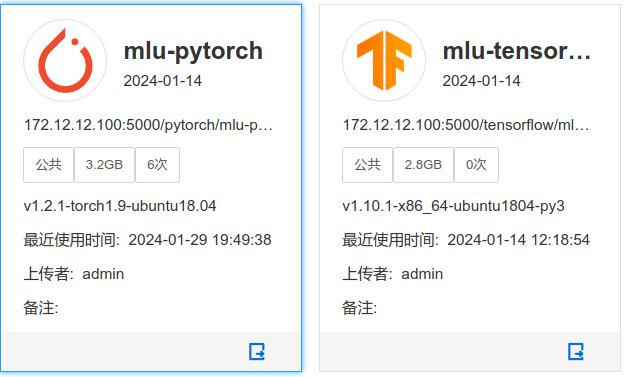
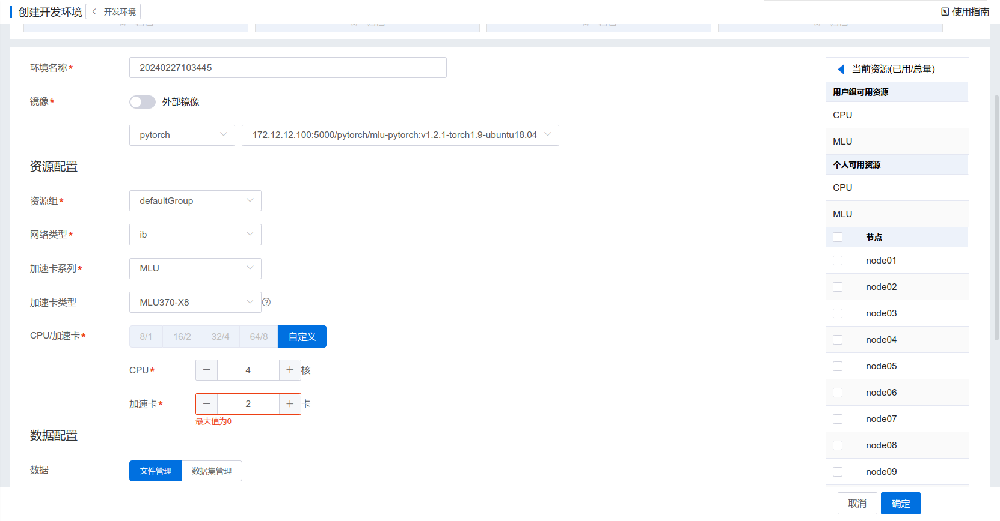
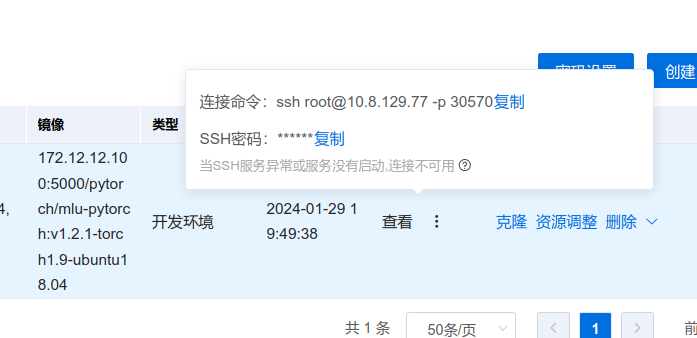
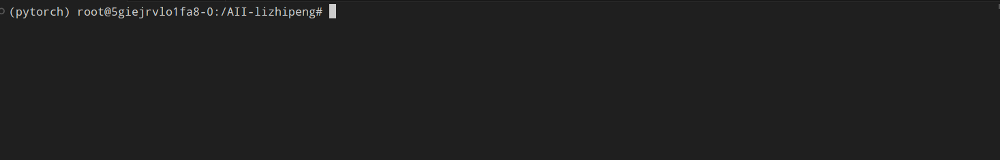
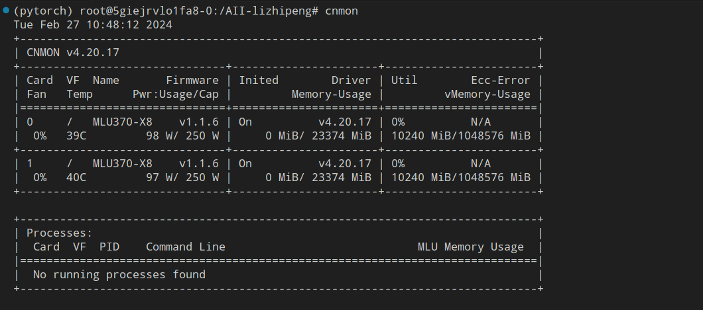
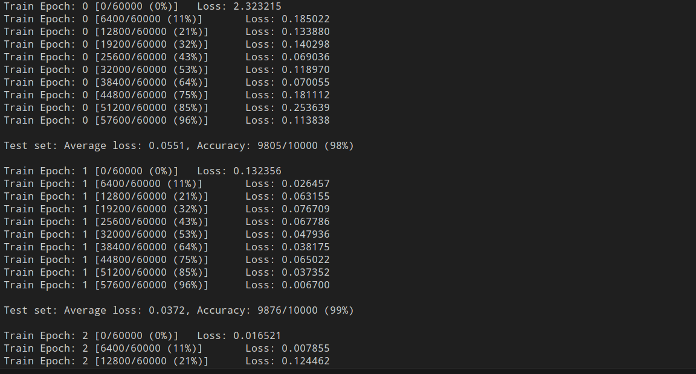
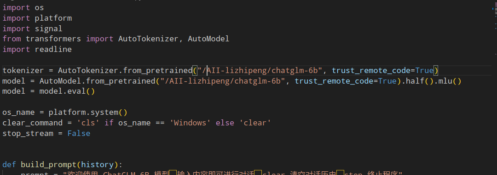

寒武纪平台使用
寒武纪平台使用(先进研究院-李治澎)
使用自带的镜像创建新环境
目前有的镜像包括pytorch和tensorflow

业务管理->开发环境->创建

创建完之后等待平台拉取镜像后，会出现一个正在运行的环境

点击查看能够看到新创建的环境的ssh连接，如下

也可以直接点击环境名称进入在线的jupyter界面
环境使用（以pytorch_python3.6镜像为例）
在进入到容器实例(也就是上面创建的新环境)后，镜像中自带了一个已经配置好的寒武纪环境，在终端中分别输入下面两行命令启动寒武纪python环境（若使用pytorch_python3.7镜像则不需要这一步）
1 | source /torch/venv3/pytorch/bin/activate |
之后终端就会出现(pytorch)为开头的python环境，如下

可以使用cnmon命令来查看显卡使用情况(类似于NVIDIA的nvidia-smi)

以下是一个具体的使用torch的实际代码例子
因为容器内无法联网，所以下面例子中的数据集需要在本地提前下载好
1 | train_set = mnist.MNIST('./data',train=True,transform=data_tf,download=True) |
然后将下面完整代码和数据集上传到容器中

在终端中输入下面的命令运行代码
1 | python mnist.py |
终端会输出训练的记录

1 | import torch #导入原生PyTorch |
至此，AI Station 平台中自带的寒武纪环境已经可以使用，只需要在该python环境下使用python ***.py 即可运行相应的代码
运行已有的pytorch代码
运行/torch/src/catch/tools/torch_gpu2mlu.py脚本将自己原有的代码转化为可以在寒武纪显卡上可以运行的代码
1 | python /torch/src/catch/tools/torch_gpu2mlu.py --i /path/your/code/dir |
运行完上述代码之后，会在当前目录生成一个新的以_mlu为后缀的文件夹，之后只需要运行新文件夹中的代码即可

运行大模型
以Chatglm-6b为例
首先下载Chatglm-6b的运行代码https://github.com/THUDM/ChatGLM-6B.git
1 | git clone https://github.com/THUDM/ChatGLM-6B.git |
之后下载Chatglm-6b的模型权重，下载地址是https://huggingface.co/THUDM/chatglm-6b
可以使用命令直接下载，也可以手动下载
1 | git lfs clone https://huggingface.co/THUDM/chatglm-6b |
[!NOTE]
这里需要加一步操作，就是将权重文件中的modeling_chatglm.py 中的 所有的skip_init 函数修改，因为MLU不支持1.10的skip_init，具体如何修改可以参考如下
2
3
4
5
6
7
8
# torch.nn.Linear,
# hidden_size,
# 3 * self.inner_hidden_size,
# bias=bias,
# dtype=params_dtype,
# )
self.query_key_value = torch.nn.Linear(hidden_size, 3 * self.inner_hidden_size, bias=bias)
然后将代码和模型权重全部上传到服务器上，可以使用sftp文件传输软件，如filezilla
通过脚本文件将Chatglm的代码转化为可以在寒武纪显卡上可以运行的
1 | python /torch/src/catch/tools/torch_gpu2mlu.py --i /path/to/ChatGLM-6B |
修改ChatGLM-6B_mlu文件夹代码中的模型权重路径

之后就可以在寒武纪显卡上运行Chatglm 6b 大模型
1 | python cli_demo.py |

显卡情况如下：

镜像制作
可以先从寒武纪官网下载已经配置好的镜像，然后在本地加载镜像进行二次修改，补充自己需要的软件或库文件，之后再上传到AI station平台进行使用，具体流程如下：
首先，从寒武纪官网下载制作好的镜像

1 | wget https://sdk.cambricon.com/static/PyTorch/MLU370_1.9_v1.17.0_X86_ubuntu20.04_python3.7_docker/pytorch-v1.17.0-torch1.9-ubuntu20.04-py37.tar.gz |
会在本地得到一个pytorch-v1.17.0-torch1.9-ubuntu20.04-py37.tar.gz的文件
之后在本地加载该镜像
1 | docker load -i pytorch-v1.17.0-torch1.9-ubuntu20.04-py37.tar.gz |

之后查询当前已有的镜像，可以看到刚刚下载的镜像已经被载入，复制其 IMAGE_ID
1 | docker image list |

运行docker镜像,规定好平台为linux,为x86-64架构CPU指令集
1 | docker run -it --platform linux/amd64 497a0473974f /bin/bash |

进入该镜像之后，便可以进行软件的安装，或者python环境的安装
安装完成之后，将运行中的容器(Container) 打包为一个新的镜像
首先查询当前docker内正在执行的进程，记住当前的CONTAINER_ID
1 | docker ps |

将当前运行的容器提交成为一个镜像
1 | docker commit c5cde0f5e319 pytorch_mlu_python3.7 |

将本地镜像保存为一个可循环复用的备份
1 | docker save pytorch_mlu_python3.7 | gzip > mlu_pytorch_python3.7.tar.gz |

[!NOTE]
该步骤会根据镜像的大小等待不同的时间，一般在十几分钟以上，请耐心等待
完成后会在本地生成一个tar.gz后缀的文件

将本地tar包上传到AIStation，镜像管理>导入

FAQ
离线安装python库
第一步 在有网络的主机上下载库文件包
1 | pip download -d ./path transformers==4.30.2 |
该命令将会把对应库及其依赖库的文件都下载到当其目录的path文件夹当中
然后将path文件夹上传到离线环境的主机下
第二步 在离线环境下安装path文件夹中的库
1 | pip install --no-index --find-links=./path transformers |
在离线环境下使用上述命令即可安装所需要的库
补充1 提示缺少某个库依赖
这种情况是因为有网的主机python环境下已经存在某个所需要的包,所以并没有将这个包下载到path文件中,而离线环境下没有这个包所导致的,这种情况 只需要对于这个没有的包 使用一下上面的流程就可以了
补充2 提示库的版本不对
这种情况是因为有网主机的python环境(操作系统, python版本)与离线主机的python环境不一致导致的, 需要找一个与离线主机python版本一致的主机即可.
离线安装conda库
你需要有什么？
- 迁出机器：可联网，已有虚拟环境准备迁移的机器，可以是本地电脑也可以是服务器
- 迁入机器：不可联网，无虚拟环境，可以是另一台电脑也可以是服务器
迁出机器部分——打包环境
迁出机器安装打包工具
1 | conda install -c conda-forge conda-pack |
安装好之后打包需要迁出的环境（-n 之后为 虚拟环境名字 -o 之后为打包出来的文件名）
1 | conda pack -n envsname -o conda_envsname.tar.gz |
gz是一个压缩文件，包含了你环境本身以及所有的包
将打包的环境通过 ftp 传输到迁入机器中
迁出机器部分结束
迁入机器部分——解压、部署环境
在你的 anaconda 目录下创建文件夹 名称（envs）即为你迁过来的环境名称
1 | mkdir -p /root/anaconda3/envs/envsname |
解压环境（-C 之前为打包压缩文件路径 -C 之后为迁入机器 anaconda3 文件夹下 envs 目录 + 环境名）
1 | tar -xzf /root/tempfile/conda_envsname.tar.gz -C /root/anaconda3/envs/envsname |
执行后完成 cd 进 envs 目录中已经可以看到环境拷贝完成
1 | /root/anaconda3/envs/envsname |
检查环境是否完全复制
1 | conda activate envsname |